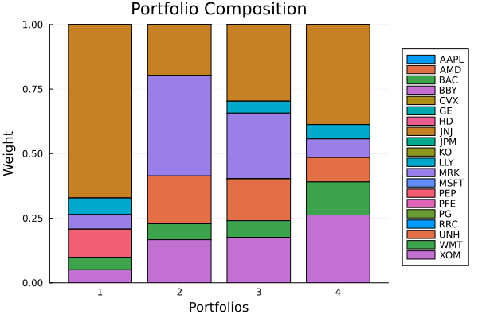
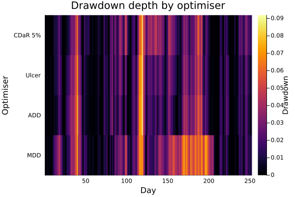
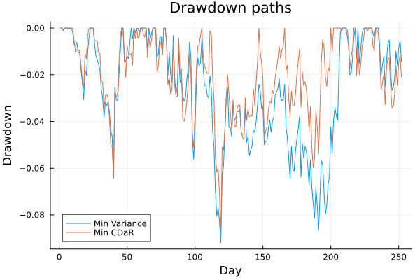

The source files can be found in examples/.
Drawdown risk measures
Drawdown-based risk measures describe how far the portfolio has fallen from its previous high at each point in time. Where variance and CVaR look at the cross-sectional distribution of single-period returns, drawdown measures look at the path of cumulative wealth — the maximum loss you would have experienced by holding the portfolio from any peak to any subsequent trough.
Four related measures are available:
| Measure | What it penalises |
|---|---|
MaximumDrawdown | The single worst peak-to-trough decline over the whole period |
AverageDrawdown | The time-average depth of the drawdown curve |
UlcerIndex | The root-mean-square of the drawdown curve (penalises long shallow drawdowns more than AverageDrawdown) |
ConditionalDrawdownatRisk | The expected drawdown conditional on being in the worst-α fraction (CDaR, the drawdown analogue of CVaR) |
Reach for drawdown measures when the recovery path matters — trend-following strategies, strategies sold to retail investors who may redeem at the worst moment, or any portfolio where drawdown duration and depth are reported to stakeholders. Variance minimisation ignores paths entirely; these measures do not.
using PortfolioOptimisers, PrettyTables, DataFramesresfmt = (v, i, j) -> begin if j == 1 return v else return isa(v, Number) ? "$(round(v * 100, digits = 3)) %" : v endend;1. Data and shared setup
using CSV, TimeSeries, ClarabelX = TimeArray(CSV.File(joinpath(@__DIR__, "..", "SP500.csv.gz")); timestamp = :Date)[(end - 252):end]rd = prices_to_returns(X)pr = prior(EmpiricalPrior(), rd)slv = [Solver(; name = :clarabel1, solver = Clarabel.Optimizer, settings = Dict("verbose" => false), check_sol = (; allow_local = true, allow_almost = true)), Solver(; name = :clarabel2, solver = Clarabel.Optimizer, settings = Dict("verbose" => false, "max_step_fraction" => 0.95), check_sol = (; allow_local = true, allow_almost = true)), Solver(; name = :clarabel3, solver = Clarabel.Optimizer, settings = Dict("verbose" => false, "max_step_fraction" => 0.9), check_sol = (; allow_local = true, allow_almost = true))]opt = JuMPOptimiser(; pe = pr, slv = slv)JuMPOptimiser
pe ┼ LowOrderPrior
│ X ┼ 252×20 Matrix{Float64}
│ o_X ┼ nothing
│ mu ┼ 20-element Vector{Float64}
│ sigma ┼ 20×20 Matrix{Float64}
│ chol ┼ nothing
│ w ┼ nothing
│ ens ┼ nothing
│ kld ┼ nothing
│ ow ┼ nothing
│ rr ┼ nothing
│ fpr ┼ nothing
│ Z ┴ nothing
slv ┼ 3-element Vector{Solver}
│ Solver ⋯
│ Solver ⋯
│ Solver ⋯
wb ┼ WeightBounds
│ lb ┼ Float64: 0.0
│ ub ┴ Float64: 1.0
bgt ┼ Float64: 1.0
sbgt ┼ nothing
gbgt ┼ nothing
xbgt ┼ Bool: false
lt ┼ nothing
st ┼ nothing
lcse ┼ nothing
cte ┼ nothing
gcarde ┼ nothing
sgcarde ┼ nothing
smtx ┼ nothing
sgmtx ┼ nothing
slt ┼ nothing
sst ┼ nothing
sglt ┼ nothing
sgst ┼ nothing
tn ┼ nothing
fees ┼ nothing
sets ┼ nothing
tr ┼ nothing
ple ┼ nothing
ret ┼ ArithmeticReturn
│ settings ┼ JuMPReturnsSettings
│ │ scale ┼ Float64: 1.0
│ │ lb ┼ nothing
│ │ rte ┼ Bool: true
│ │ fee ┼ Bool: true
│ │ mic ┴ Bool: true
│ ucs ┼ nothing
│ mu ┴ nothing
sca ┼ SumScalariser()
ccnt ┼ nothing
cobj ┼ nothing
sc ┼ Int64: 1
so ┼ Int64: 1
ss ┼ nothing
card ┼ nothing
scard ┼ nothing
l2c ┼ nothing
lpc ┼ nothing
linfc ┼ nothing
l1 ┼ nothing
l2 ┼ nothing
lp ┼ nothing
linf ┼ nothing
brt ┼ Bool: false
x_src ┼ Symbol: :prior
z_src ┼ Symbol: :data
strict ┴ Bool: false
2. Minimising each drawdown measure
These measures drop into MeanRisk with no extra configuration. Their constructors only take an optional settings::RiskMeasureSettings; ConditionalDrawdownatRisk additionally accepts alpha (the tail probability, default 0.05).
r_mdd = MaximumDrawdown()r_add = AverageDrawdown()r_uci = UlcerIndex()r_cdar = ConditionalDrawdownatRisk()results = map([r_mdd, r_add, r_uci, r_cdar]) do r return optimise(MeanRisk(; r = r, opt = opt))endlabels = ["MDD", "ADD", "Ulcer", "CDaR 5%"]pretty_table(DataFrame(hcat(rd.nx, [r.w for r in results]...), [:assets; Symbol.(labels)...]); formatters = [resfmt])┌────────┬──────────┬──────────┬──────────┬──────────┐
│ assets │ MDD │ ADD │ Ulcer │ CDaR 5% │
│ Any │ Any │ Any │ Any │ Any │
├────────┼──────────┼──────────┼──────────┼──────────┤
│ AAPL │ 0.0 % │ 0.0 % │ 0.0 % │ 0.0 % │
│ AMD │ -0.0 % │ 0.0 % │ 0.0 % │ -0.0 % │
│ BAC │ 0.0 % │ 0.0 % │ 0.0 % │ 0.0 % │
│ BBY │ -0.0 % │ 0.0 % │ 0.0 % │ -0.0 % │
│ CVX │ 0.0 % │ 0.0 % │ 0.0 % │ 0.0 % │
│ GE │ -0.0 % │ 0.0 % │ 0.0 % │ -0.0 % │
│ HD │ 0.0 % │ 0.0 % │ 0.0 % │ 0.0 % │
│ JNJ │ 67.181 % │ 19.758 % │ 29.674 % │ 38.725 % │
│ JPM │ 0.0 % │ 0.0 % │ 0.0 % │ 0.0 % │
│ KO │ 0.0 % │ 0.0 % │ 0.0 % │ 0.0 % │
│ LLY │ 6.369 % │ 0.0 % │ 4.612 % │ 5.567 % │
│ MRK │ 5.662 % │ 38.898 % │ 25.462 % │ 7.176 % │
│ MSFT │ 0.0 % │ 0.0 % │ 0.0 % │ 0.0 % │
│ PEP │ 10.952 % │ 0.0 % │ 0.0 % │ 0.0 % │
│ PFE │ 0.0 % │ 0.0 % │ 0.0 % │ 0.0 % │
│ PG │ 0.0 % │ 0.0 % │ 0.0 % │ 0.0 % │
│ RRC │ -0.0 % │ 0.0 % │ 0.0 % │ -0.0 % │
│ UNH │ 0.0 % │ 18.475 % │ 16.226 % │ 9.485 % │
│ WMT │ 4.773 % │ 6.206 % │ 6.432 % │ 12.791 % │
│ XOM │ 5.064 % │ 16.663 % │ 17.594 % │ 26.254 % │
└────────┴──────────┴──────────┴──────────┴──────────┘The allocations diverge noticeably. MaximumDrawdown minimises the single worst event so it concentrates into whatever reduces that peak loss. AverageDrawdown and UlcerIndex care about the whole recovery path and therefore spread weight more broadly. CDaR is the closest to CVaR in spirit and allocations.
using StatsPlots, GraphRecipes, StatsBaseplot_stacked_bar_composition(results, rd)
To avoid an unreadable spaghetti chart, we compare drawdown paths with a heatmap instead of many overlaid lines. Darker cells indicate deeper drawdowns for that optimiser at that date.
drawdown_grid = hcat([(-drawdowns(rd.X * res.w)) for res in results]...)heatmap(eachindex(rd.ts), labels, drawdown_grid'; xlabel = "Day", ylabel = "Optimiser", colorbar_title = "Drawdown", title = "Drawdown depth by optimiser")
3. Tail level sensitivity for CDaR — sweeping alpha
ConditionalDrawdownatRisk accepts alpha. As alpha → 0 it focuses on catastrophic tail drawdowns; larger alpha broadens the tail set and moves toward average-tail behaviour.
alphas = [0.01, 0.05, 0.1, 0.25]cdar_results = [optimise(MeanRisk(; r = ConditionalDrawdownatRisk(; alpha = a), opt = opt)) for a in alphas]pretty_table(DataFrame(hcat(rd.nx, [r.w for r in cdar_results]...), [:assets; Symbol.("CDaR_" .* string.(alphas))...]); formatters = [resfmt])┌────────┬───────────┬───────────┬──────────┬───────────┐
│ assets │ CDaR_0.01 │ CDaR_0.05 │ CDaR_0.1 │ CDaR_0.25 │
│ Any │ Any │ Any │ Any │ Any │
├────────┼───────────┼───────────┼──────────┼───────────┤
│ AAPL │ 0.0 % │ 0.0 % │ 0.0 % │ 0.0 % │
│ AMD │ 0.0 % │ -0.0 % │ -0.0 % │ -0.0 % │
│ BAC │ 0.0 % │ 0.0 % │ 0.0 % │ 0.0 % │
│ BBY │ 0.0 % │ -0.0 % │ -0.0 % │ 0.0 % │
│ CVX │ 0.0 % │ 0.0 % │ 0.0 % │ 0.0 % │
│ GE │ 0.0 % │ -0.0 % │ -0.0 % │ -0.0 % │
│ HD │ 0.0 % │ 0.0 % │ 0.0 % │ 0.0 % │
│ JNJ │ 63.749 % │ 38.725 % │ 34.907 % │ 31.571 % │
│ JPM │ 0.0 % │ 0.0 % │ 0.0 % │ 0.0 % │
│ KO │ 1.179 % │ 0.0 % │ 0.0 % │ 0.0 % │
│ LLY │ 8.586 % │ 5.567 % │ 3.354 % │ 5.208 % │
│ MRK │ 0.0 % │ 7.176 % │ 15.667 % │ 22.41 % │
│ MSFT │ 0.0 % │ 0.0 % │ 0.0 % │ 0.0 % │
│ PEP │ 0.0 % │ 0.0 % │ 6.188 % │ 0.0 % │
│ PFE │ 0.0 % │ 0.0 % │ 0.0 % │ 0.0 % │
│ PG │ 0.0 % │ 0.0 % │ 0.0 % │ 0.0 % │
│ RRC │ 0.0 % │ -0.0 % │ -0.0 % │ -0.0 % │
│ UNH │ 0.0 % │ 9.485 % │ 12.444 % │ 14.243 % │
│ WMT │ 11.425 % │ 12.791 % │ 7.425 % │ 10.14 % │
│ XOM │ 15.061 % │ 26.254 % │ 20.015 % │ 16.428 % │
└────────┴───────────┴───────────┴──────────┴───────────┘Lower alpha focuses more on preventing catastrophic drawdowns; higher alpha cares about average drawdown depth across more of the distribution.
4. Constraining drawdown rather than minimising it
Instead of using a drawdown measure as the primary objective, you can impose an upper bound on it while optimising return. Here we find the portfolio that maximises risk-adjusted return subject to a CDaR ceiling, using RiskMeasureSettings to set the ub.
rf = 4.2 / 100 / 252r_cdar_ub = ConditionalDrawdownatRisk(; settings = RiskMeasureSettings(; ub = 0.08))res_cdar_max_ratio = optimise(MeanRisk(; r = r_cdar_ub, obj = MaximumRatio(; rf = rf), opt = opt))println("CDaR-constrained max-ratio retcode: $(res_cdar_max_ratio.retcode)")CDaR-constrained max-ratio retcode: OptimisationSuccess
res ┴ Dict{Any, Any}: Dict{Any, Any}()5. Drawdown analytics — post-optimisation diagnostics
After choosing a portfolio, drawdowns() and cumulative_returns() give a full picture of how the portfolio would have behaved over the in-sample period. These are analytics, not objectives — use them to understand a portfolio after the optimiser has run.
# Pick two portfolios to compare side by side.w_var = optimise(MeanRisk(; r = Variance(), opt = opt)).ww_cdar = results[4].w ## CDaR minimising portfolio# Portfolio return time series for each weight vector.ret_var = rd.X * w_varret_cdar = rd.X * w_cdar# Cumulative returns (simple).cr_var = cumulative_returns(ret_var)cr_cdar = cumulative_returns(ret_cdar)# Drawdown series.dd_var = drawdowns(ret_var)dd_cdar = drawdowns(ret_cdar)# Summary statistics.pretty_table(DataFrame(; :Metric => ["Max drawdown", "Avg drawdown", "Ulcer index", "CDaR 5%"], :MinVariance => [-minimum(dd_var), -mean(dd_var), sqrt(mean(dd_var .^ 2)), -quantile(-dd_var, 0.95)], :MinCDaR => [-minimum(dd_cdar), -mean(dd_cdar), sqrt(mean(dd_cdar .^ 2)), -quantile(-dd_cdar, 0.95)]); formatters = [resfmt])┌──────────────┬─────────────┬──────────┐
│ Metric │ MinVariance │ MinCDaR │
│ String │ Float64 │ Float64 │
├──────────────┼─────────────┼──────────┤
│ Max drawdown │ 9.19 % │ 8.965 % │
│ Avg drawdown │ 2.622 % │ 1.902 % │
│ Ulcer index │ 3.472 % │ 2.535 % │
│ CDaR 5% │ -6.869 % │ -5.095 % │
└──────────────┴─────────────┴──────────┘The CDaR-minimising portfolio has a materially lower CDaR than the variance-minimising portfolio. The variance portfolio may still have a lower standard deviation, but when you look at the path, its drawdown profile is worse in the tail.
plot(cr_var; label = "Min Variance", xlabel = "Day", ylabel = "Cumulative return", title = "Cumulative return paths")plot!(cr_cdar; label = "Min CDaR")plot(dd_var; label = "Min Variance", xlabel = "Day", ylabel = "Drawdown", title = "Drawdown paths")plot!(dd_cdar; label = "Min CDaR")
Summary
Drawdown measures target the path of cumulative wealth:
MaximumDrawdownguards against the worst single episode but can produce concentrated portfolios.AverageDrawdownandUlcerIndexpenalise the entire recovery curve.ConditionalDrawdownatRiskis the natural drawdown analogue of CVaR and responds toalphathe same way.- Heatmaps of
drawdowns()are often clearer than overlaid line plots when comparing many drawdown-optimised portfolios.
- Heatmaps of
- After optimisation,
drawdowns()andcumulative_returns()give the full diagnostic picture for any weight vector without re-running the optimiser.
This page was generated using Literate.jl.